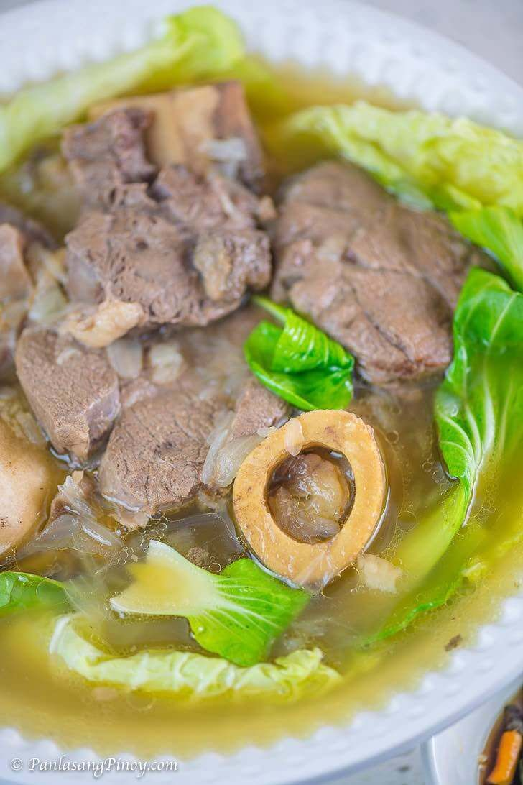

Bulalo

Description
Bulalo is a delicious Filipino stew that uses beef
shank with marrow still inside the bone. Patience
is required when cooking bulalo for the optimal
tenderness (for this recipe, bulalo sits in the
pressure cooker for about an hour and a half).
Ingredients
- 2 lbs beek shank
- 1/2 cabbage
- 1 bundle bok choy
- 2 cobs corn
- 2 tablespoons whole peppercorn
- 1/2 cup green onions
- 1 onion
- 32 ounces water
- fish sauce to taste
Steps
- In a big cooking pot, pour in water and bring
to a boil
- Put-in the beef shank followed by the onion and
whole pepper corn then simmer for 1.5 hours (30
min if using a pressure cooker) or until meat is
tender
- Add the corn and simmer for another 10 minutes
- Add the fish sauce, cabbage, pechay, and green
onion (onion leeks)
- Serve hot. Share and enjoy!